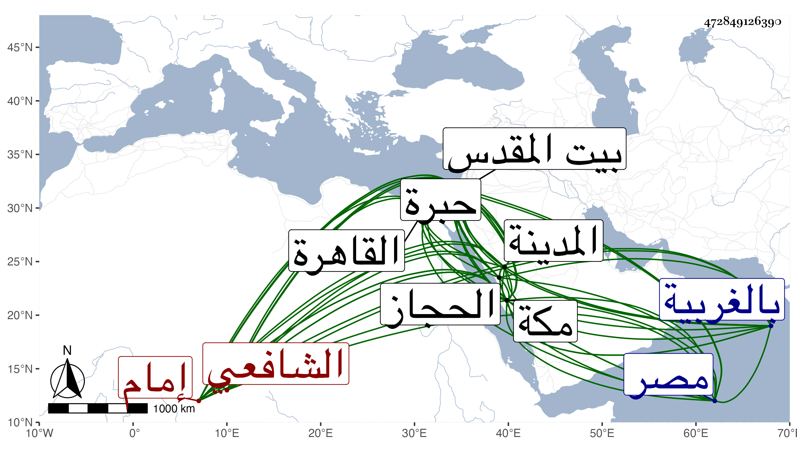

0902Sakhawi.DawLamic.ITO20230111-ara1.EIS1600.472849126390
Biography ID: 472849126390
259
محمد بن محمد بن عبد الرحمن بن علي بن يوسف بن منصور الكمال أبو محمد بن الشمس بن التاج بن النور الفاهري الشافعي إمام الكاملية هو أبوه وجده وجد أبيه ووالد محمد وأحمد وعبد الرحمن المذكورين ووالده في محالهم ويعرف بابن إمام الكاملية . ولد في صبيحة يوم الخميس ثامن عشر شوال سنة ثمان وثمانمائة بالقاهرة ونشأ بها فقرأ القرآن عند الشهاب البني وسعد العجلوني والغرس الخليل الحسيني وغيرهم وجود بعضه على الزراتيتي وحفظ بعض التنبيه وجمع الوردية والملحة وأخذ الفقه عن الشموس البوصيري والبرماوي وابن حسن البيجوري الضرير والشهاب الطنتدائي وناصر الدين البارنباري والشرف السبكي وهو أكثرهم عنه أخذا وحضر دروس الولي العراقي والنور بن لولو قال وكان من الأوليلء والنحو والفرائض والحساب عن الشمس الحجازي وعنه وعن السبكي والبارنباري المذكورين والنور القمني والقاياتي أخذ النحو أيضا بل سمع بقراءة الحجازي على العيني شرحه للشواهد وبفوت يسير بحثا وأصلح فيه القارئ كثيرا مما وافقه عليه المؤلف بعد الجهد في أول الأمر وكتبه في نسخته واعتمده بعد ذلك وعن القاياتي والونائي أصول الفقه وعن أولهما والبساطي أصول الدين وعن البارنباري والعز عبد السلام البغدادي المنطق وحضر عند شيخنا في الفقه والتفسير والحديث وسمع عليه وكذا على الولي العراقي وابن الجزري والبرماوي والواسطي وابن ناظر الصاحبة وابن بردس والحجازي وغيرهم كابي الفتح المراغي والتقي بن فهد بمكة والتقي القلقشندي وغيره ببيت المقدس وآخرين بالمدينة النبوية وأحب السماع بأخرة وتزايدت رغبته فيه جدا حتى كمل له سماع الكتب الستة وغيرها من الكتب والأجزاء على متأخري المسندين وبورك له في اليسير من كل ما تقدم خصوصا وقد صحب السادات كابراهيم الأدكاوي وأدخله الخلوة وفتح عليه فيها ويوسف الصفي والغمري والكمال المجذوب وعظم اختصاصه به فانتفع بهم وظهرت عليه بركاتهم وزاد في الإنقياد معهم والتأدب بحضرتهم بحيث كان أمره في ذلك يجل عن الوصف ، وأقرأ الطلبة في حياة كثير من شيوخه أو أكثرهم وقسم الكتب الثلاثة وغيرها لكن مع الإسترواح ومع ذلك فما تخلف الأماثل عن الأخذ عنه ، وقد وصفه البرماوي في حال صغره بالذكاء وصحة الفهم والأسئلة الدالة على الإستعداد ، ودرس للمحدثين بالقطبية التي برأس حارة زويلة وبعد موت الجلال بن الملقن بالكاملية وفي الفقه بالأيوان المجاور لقبة الشافعي حين استقر فيه وفي النظر على أوقافه بعد زين العابدين بن المناوي وتزايد سروره بذلك جدا وفي أيامه بسفارة الأمين الأقصرائي جدد السلطان عمارته وخطب قديما لتدريس الصلاحية ببيت المقدس فما أجاب ، وكذا عرض عليه قضاء الشافعية بمصر فصمم على الأمتناع مع طلوع الأقصرائي به إلى الظاهر خشقدم ومشافهته له فيه . وصنف علي البيضاوي الأصلي شرحا مطولا ومختصرا وهو الذي اشتهر وتداوله الناس كتابة وقراءة وقرضه الأئمة من شيوخه كشيخنا والقاياتي والونائي وابن الهمام وكنت ممن كتبه قديما وأخذه عنه وكذا كتب علي مختصر ابن الحاجب الأصلي شرحا وصل فيه إلى آخر الإجماع وعلى الورقات والوردية النحوية وصل فيه إلى الترخيم وأربعي النووي وخطبة كل من المنهاج والحاوي وبعض التنبيه وأفرد على المنهاج من نكت العراقي وغيرها نكتا واختصر كلا من تفسير البيضاوي وشرح البخاري للبرهان الحلبي وشرح العمدة ورجالها للبرماوي مع زيادات يسيرة في كلها وتخريج شيخنا لمختصر ابن الحاجب وكتب في الخصائص النبوية شيئا وكذا على سورة الصف والحديث المسلسل بها مجلدا سماه بسط الكف قرئ عليه منه السيرة النبوية بالروضة الشريفة إذ توجه من مكة للزيارة في وسط سنة تسع وستين وكان في القافلة البدر بن عبيد الله الحنفي وقال له يا فلان أنا درست سنة مولدك . وأفرد لكل من ابن عباس والبخاري ومسلم والشيخ أبي إسحق والنووي والقزويني وعياض والعضد وغيرهم ترجمة وكذا عمل طبقات الاشاعرة ومصنفا في القول بحياة الخضر ومختصرا لطيفا في الفقه ومناسك وجزءا في كون الصلاة أفضل الأعمال وآخر لطيفا في التحذير من ابن عربي وغير ذلك ، وقد حج وجاور غير مرة وكذا زار بيت المقدس والخليل كثيرا ، وسافر لزيارة الصالحين بالغربية ونحوها في حال صغره مع والده ثم في أواخر عمره ، وصحبته قديما وكان يحلف أنه لا يوازيني عنده من الفقهاء أحد ويكثر الدعاء لي بل ويسأل لي في ذلك من يعتقد فيه الخير ويقول أنه قائم بحفظ السنة على المسلمين وما أعلم نظيره إلى غير ذلك مما يبيح به سفرا وحضرا وسمع بقراءتي جملة بل استجازني بالقول البديع من تصانيفي بعد أن سمع مني بعضه وكان عنده بخطي نسخة منه فكان يذكر لي أنه لا يفارقه غالبا وكذا سمع مني بعض أربعي الصابوني وأفردت جملة من أحواله وأسانيده التي حصلت له أكثرها في تصنيف كثر اغتباطه به وراج أمره بسببه كثيرا ، وكان إماما علامة حسن التصور جيد الإدراك زائد الرغبة في لقاء من ينسب إلى الصلاح والنفرة ممن يفهم عنه التخبيط وربما عودي بسبب ذلك . صحيح المعتقد متواضعا متقشفا طارحا للتكلف بعيدا عن الملق والمداهنة ذا أحوال صالحة وأمور تقرب من الكشف تام العقل خبيرا بالأمور قليل المخالطة لأرباب المناصب مع اجلالهم له حلو اللسان محببا للأنفس الزكية من الخاصة والعامة ممتنعا من الكتابة علي الفتوى ومن الشفاعات والدخول في غالب الأمور التي يتوسل به فيها ركونا منه لراحة القلب والقالب وعدم الدخول ميما لا يعنيه ، حسن الأستخراج للأموال من كثير من التجار وغيرهم بطريقة مستظرفة جدا لو سلكها غيره لاستهجن ، كثير البر منها لكثير من الفقراء . والطلبة متزايد الأمر في ذلك خصوصا في أواخر أمره بحيث صار جماعة من المجاذيب المعتقدين والأيتام والأرامل وعرب الهتيم ونحوهم يقصدونه للأخذ حتى كان لكثرة ترادفهم عليه قد رغب في الإنعزال بأعلى بيته وصار حينئذ يستعمل الأذكار والأوراد وما أشبه ذلك وحسن حاله جدا وبالجملة فكان جمالا للفقهاء والفقراء ولا زالت وجاهته وجلالته في تزايد إلى أن تحرك للسفر إلى الحجاز مع ضعف بدنه وسافر وهو في عداد الأموات فأدركه الأجل وهو سائر في يوم الجمعة خامس عشري شوال سنة أربع وستين وصلى عليه عند رأس ثغرة حامد في جمع صالحين من رفقائه وغيرهم ودفن هناك وبلغني أنه كان يلوح بموته في هذه السفرة ولذا ما نهض أحد إلى انثناء عزمه عن السفر مع تزايد ضعفه وعظم الأسف على فقده إلا طائفة قليلة من معتقدي ابن عربي فإنه ممن كان يصرح بالإنكار عليه حتى رجع إليه جماعة كثيرون من معتقديه لحسن مقصده ورفقه التام في التحذير منه ، ولم يكن يسمح بالتصريح في ابن الفارض نفسه مع موافقته لي على إنكار كثير من تائيته رحمه الله وإيانا .
